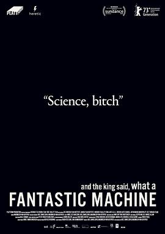

然后国王说，好个奇异的机器 / And the King Said, What a Fantastic Machine
又名：神奇的机器 / Fantastic Machine
一个用别人拍的视频拼凑出来的纪录片，结构确实略显杂乱，但是很多确实是我所不知道的视频/图像。当然，收集起来也是花了功夫的，但是结构确实短板。主题非常有意思~ 摄影的出现确实是一直在改变我们的生活，以前长镜头可以代表真实，ai时代这一切都被推翻了，摄影技术将何去何从？oh，颇为有趣的是今天是Kings birthday假期。
作品信息
| 导演 | 阿克塞尔·丹尼尔森 / 马克西米利·范·艾崔克 |
| 编剧 | 阿克塞尔·丹尼尔森 / 马克西米利·范·艾崔克 |
| 类型 | 纪录片 |
| 制片国家/地区 | 瑞典 / 丹麦 |
| 语言 | 瑞典语 / 英语 / 法语 / 德语 / 阿拉伯语 |
| 上映日期 | 2023-01-20(圣丹斯电影节) / 2023-02-22(柏林电影节) |
| 片长 | 85分钟 |
| IMDb | tt24082520 |
说过什么
2026-10-04 11:46:47
广播 · 看过 · ★★★☆☆
一个用别人拍的视频拼凑出来的纪录片，结构确实略显杂乱，但是很多确实是我所不知道的视频/图像。当然，收集起来也是花了功夫的，但是结构确实短板。主题非常有意思~ 摄影的出现确实是一直在改变我们的生活，以前长镜头可以代表真实，ai时代这一切都被推翻了，摄影技术将何去何从？
2026-05-22 22:10:15
广播 · 想看
这条记录有 2 个版本 · 最后一次看到是 2026-10-05T14:10:29+11:00 · 豆瓣原页